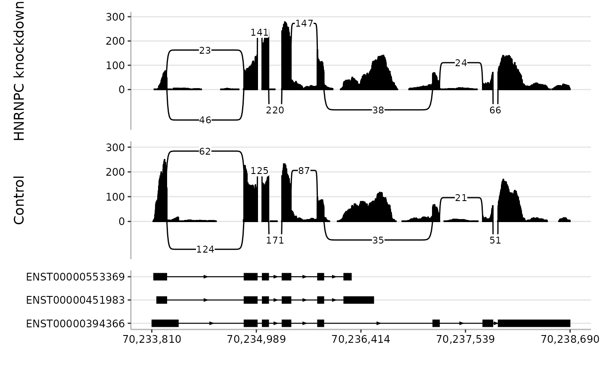

Visualise RNA-seq alignments as sashimi-style plots
Source:R/spliceTerrain.R
spliceTerrain-methods.RdspliceTerrain() draws sashimi-style plots for one or more BAM files
over a genomic region. Plots combine per-base coverage, splice junction arcs,
optional transcript annotation, and optional highlighted regions.
Intronic or otherwise uninformative gaps can be compacted so the plotting
area is focused on observed or annotated features.
Usage
spliceTerrain(
bam,
region,
annotation = NULL,
psi = NULL,
highlight = NULL,
strandedness = "unstranded",
min_mapq = 0,
min_coverage = 0,
min_junction_reads = 10,
lib_size = NULL,
norm_factors = NULL,
normalise_to = NULL,
compress_introns = TRUE,
intron_width = 50,
min_arrow = intron_width + 1,
common_y = FALSE,
arc_height = 1,
arc_side = c("both", "above", "below"),
arc_scale = FALSE,
colours = "black",
highlight_colour = scales::alpha("red", 0.2),
anno_fill_by = NULL,
anno_fill_colours = NULL,
anno_label_by = NULL,
anno_label_colour = "white",
anno_label_size = 3,
junc_text_size = 3,
panel_heights = 1,
axis_title_size = 12,
axis_text_size = 9,
return_ctx = FALSE,
ctx = NULL
)Arguments
- bam
Character vector of BAM file paths. If unnamed, sample labels are derived from BAM basenames with the
.bamsuffix removed. If names are supplied, all names must be non-empty and unique. BAM files should be indexed for region-restricted import. Single-end and paired-end BAMs are both supported; paired-end status is detected from the BAM flags.- region
Genomic interval to plot. May be a GRanges, a GRangesList, or a character string coercible to
GRanges, such as"chr:start-end"or"chr:start-end:strand". Commas, spaces, and en/em dashes in character regions are normalised before coercion. If multiple ranges are supplied, they must all be on the same seqname and are reduced to a single span used as the BAM query and plotting window.- annotation
Optional annotation track. Must be a GRangesList, with each list element representing one feature group such as a transcript model. Each group is drawn on its own annotation row. List element names are used as y-axis labels; if absent, default group labels are generated. Annotation is restricted to the plotting region.
- psi
Optional genomic interval used to annotate junction labels with local junction usage (percent spliced in, PSI). Accepts the same formats as
region. Junctions with a start or end anchor overlappingpsiare labelled with their fraction of total junction reads among the selected junctions.- highlight
Optional interval(s) to highlight. Accepts the same formats as
region. Multiple ranges may be supplied. Highlighted intervals are drawn as shaded vertical bands spanning the full panel height.- strandedness
Library strandedness for each BAM. Must be one of
"unstranded","forward", or"reverse", and may be supplied either as a single value applied to all BAMs or as one value per BAM. Use"unstranded"when reads from both strands should be included. For stranded paired-end BAMs, this value is passed to readGAlignmentPairs asstrandMode. Ifregionincludes a strand andstrandednessis not"unstranded", imported alignments are restricted to overlaps on the resolved region strand.- min_mapq
Integer scalar. Minimum mapping quality (MAPQ) for alignments to be imported from the BAM file.
- min_coverage
Integer scalar or integer vector. Minimum per-base coverage required for positions to be retained for plotting. May be supplied either as a single value applied to all BAMs or as one value per BAM.
- min_junction_reads
Integer scalar or integer vector. Minimum number of split reads supporting a junction for it to be retained for plotting. May be supplied either as a single value applied to all BAMs or as one value per BAM.
- lib_size
Optional numeric vector giving RNA-seq library sizes, one per BAM file. When supplied, coverage and junction counts are normalised by effective library size before plotting.
- norm_factors
Optional numeric vector of normalisation factors, one per BAM file, such as edgeR TMM normalisation factors. Requires
lib_size. Effective library sizes are calculated aslib_size * norm_factors.- normalise_to
Optional numeric scalar giving the target library size used for normalisation. If
NULL, counts are normalised to the median effective library size.- compress_introns
Logical scalar. If
TRUE, compact gaps between observed or annotated genomic blocks so plotting space is focused on regions containing coverage, junctions, annotations, or supplied overlays. IfFALSE, plot genomic coordinates directly.- intron_width
Integer scalar. Approximate plot-space width used for compacted gaps when
compress_introns = TRUE.- min_arrow
Integer scalar. Minimum annotation intron width required before drawing directional arrows.
- common_y
Logical scalar. If
TRUE, use a common y-axis range across all sample panels. IfFALSE, each sample panel is scaled independently.- arc_height
Numeric scalar multiplying the default junction arc height.
arc_height = 1uses the default height of 0.15 times the coverage scale; larger values produce taller arcs and greater separation between stacked arcs.- arc_side
Character scalar controlling where junction arcs are drawn. Must be one of
"both","above", or"below". The default"both"alternates arcs above and below the coverage track.- arc_scale
Logical scalar. If
TRUE, scale junction arc line width by junction read count after filtering. IfFALSE, use a constant line width for all junction arcs.- colours
Character vector of colours used for each sample's coverage bars and junction arcs. Must be either length 1, in which case the same colour is used for all BAMs, or the same length as
bam, in which case one colour is used per sample.- highlight_colour
Fill and border colour used for highlighted regions. The default is a semi-transparent red produced with
scales::alpha("red", 0.2).- anno_fill_by
Optional character scalar naming a metadata column in
annotationused to group annotation features for fill colouring. Use"group"to colour by transcript/group. Values in this column are treated as discrete groups, not as continuous values or literal colour names or hex codes.- anno_fill_colours
Optional vector of colours used when
anno_fill_byis supplied. Use this argument to set annotation fill colours. If named, names should match values in the selected fill column.- anno_label_by
Optional character scalar naming a metadata column in
annotationto display as text within annotation features.- anno_label_colour
Character scalar giving the colour used for annotation labels.
- anno_label_size
Numeric scalar giving the text size used for annotation labels.
- junc_text_size
Numeric scalar giving the size of junction count labels. Passed to
ggplot2::geom_label()for junction annotations.- panel_heights
Numeric vector controlling relative heights of the plot panels. Must be length 1 or the number of BAM sample panels plus one additional value if an annotation panel is shown. When an annotation panel is shown, its height is specified by the final value.
- axis_title_size
Numeric scalar giving the axis title text size used in the final plot theme.
- axis_text_size
Numeric scalar giving the axis tick-label text size used in the final plot theme.
- return_ctx
Logical scalar. If
FALSE, return the assembled sashimi plot. IfTRUE, return the processed context list after BAM import, coverage and junction summarisation, filtering, and coordinate mapping, but before final plot assembly. This is mainly useful for inspecting or modifying processed data before plotting.- ctx
Optional context list previously returned by
spliceTerrain(..., return_ctx = TRUE). When supplied, BAM import, summarisation, filtering, and coordinate mapping are skipped, and the context is plotted directly. This supports advanced workflows where users inspect or modify processed data before drawing the final plot.
Value
If return_ctx = FALSE, a patchwork object containing one sample
panel per BAM file plus an optional annotation panel.
If return_ctx = TRUE, a context list with input and plot
components. The input component contains validated user inputs and
processed alignment, coverage, and junction data. The plot component
contains plotting ranges and mapped plot-space data, but not the final
assembled plot.
In the returned plot, the x-axis is shared across panels. Tick labels are shown in genome coordinates, including when introns are compressed.
Details
The plot is built in three conceptual steps:
Alignments overlapping
regionare imported from each BAM file. Secondary and supplementary alignments are ignored, andmin_mapqis applied during import.Coverage and splice junction counts are summarised from the imported alignments and filtered by
min_coverageandmin_junction_reads.If
compress_introns = TRUE, a plot-space map is constructed to compact gaps between observed or annotated genomic blocks. Coverage, junctions, annotation, and optional overlays are then mapped into this compacted coordinate system.
region, psi, and highlight may be supplied as genomic
ranges or as character strings coercible to GRanges. If multiple
ranges are supplied for region, they must all be on the same seqname;
their span is used as the BAM query and plotting window. Optional genomic
overlays are restricted to the plotting region before plotting.
psi and highlight are optional overlays:
psiidentifies a local region used to add percentage labels to selected junctions. Junctions with an anchor overlappingpsiare labelled with their fraction of total reads among those selected junctions.highlightmarks one or more genomic intervals to draw attention to a subregion, such as an exon, splice site, or event.
The arguments strandedness, min_coverage,
min_junction_reads, and colours may each be supplied either as
length 1, in which case the value is recycled across all BAMs, or as one
value per BAM.
When lib_size is supplied, coverage and junction counts are normalised
to a common effective library size before plotting. Effective library sizes
are calculated as lib_size * norm_factors, with
norm_factors = 1 when not supplied. If normalise_to = NULL,
counts are normalised to the median effective library size. Filtering
thresholds min_coverage and min_junction_reads are always
applied to raw counts before normalisation.
Strand filtering is applied after BAM import. Unstranded libraries retain
alignments from both strands. For stranded libraries, reads are interpreted
according to strandedness; when the resolved region has a
specific strand, alignments are then restricted to that strand.
When compress_introns = TRUE, the plot uses compacted coordinates
internally, but x-axis tick labels are reported as approximate genomic
coordinates.
Annotation is drawn on a separate panel beneath the sample panels. Highlighted intervals are overlaid across both sample and annotation panels when present.
For advanced workflows, return_ctx = TRUE can be used to inspect or
modify the processed context before plotting. Passing the modified context
back through ctx skips the data-processing steps and rebuilds the plot
from that context.
See also
readGAlignments and readGAlignmentPairs for reading alignments, and GRanges for representing genomic intervals.
Examples
if (
requireNamespace("RNAseqData.HNRNPC.bam.chr14", quietly = TRUE) &&
requireNamespace("EnsDb.Hsapiens.v75", quietly = TRUE) &&
requireNamespace("AnnotationFilter", quietly = TRUE) &&
requireNamespace("ensembldb", quietly = TRUE)
) {
bams <- RNAseqData.HNRNPC.bam.chr14::RNAseqData.HNRNPC.bam.chr14_BAMFILES
bams <- bams[c(7, 1)]
names(bams) <- c("HNRNPC knockdown", "Control")
region <- "chr14:70,233,810-70,238,690"
annotation <- ensembldb::exonsBy(
EnsDb.Hsapiens.v75::EnsDb.Hsapiens.v75,
by = "tx",
filter = AnnotationFilter::GeneIdFilter("ENSG00000100650")
)
annotation <- annotation[1:3]
ensembldb::seqlevelsStyle(annotation) <- "ucsc"
spliceTerrain(bam = bams, region = region)
spliceTerrain(
bam = bams,
region = region,
lib_size = c(40e6, 55e6),
norm_factors = c(0.95, 1.08),
common_y = TRUE
)
spliceTerrain(
bam = bams,
region = region,
annotation = annotation,
anno_fill_by = "group",
anno_fill_colours = c(
ENST00000553369 = "#66C2A5",
ENST00000394366 = "#8DA0CB",
ENST00000451983 = "#FC8D62"
),
anno_label_by = "exon_rank",
anno_label_colour = "black",
psi = "chr14:70234854-70234854",
highlight = "chr14:70233810-70234097",
arc_height = 2,
arc_side = "above",
arc_scale = TRUE,
common_y = TRUE,
colours = c("darkblue", "darkred"),
highlight_colour = scales::alpha("gold", 0.25),
anno_label_size = 2,
panel_heights = c(2, 2, 1)
)
ctx <- spliceTerrain(
bam = bams,
region = region,
annotation = annotation,
min_junction_reads = 1,
panel_heights = c(2, 2, 1),
return_ctx = TRUE
)
ctx$plot$juncs <- ctx$plot$juncs[ctx$plot$juncs$coverage >= 20]
spliceTerrain(ctx = ctx)
}
